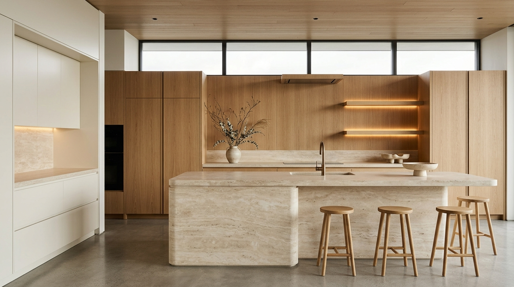
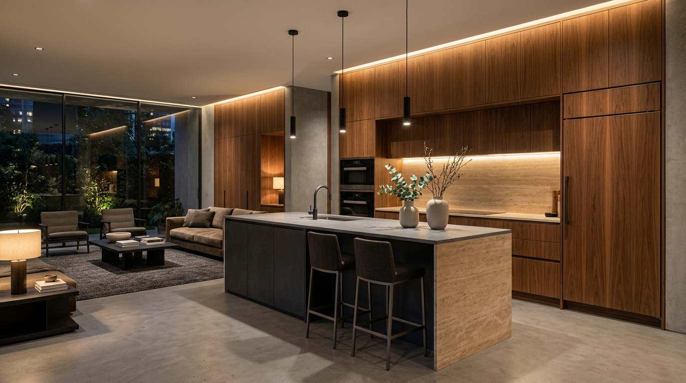
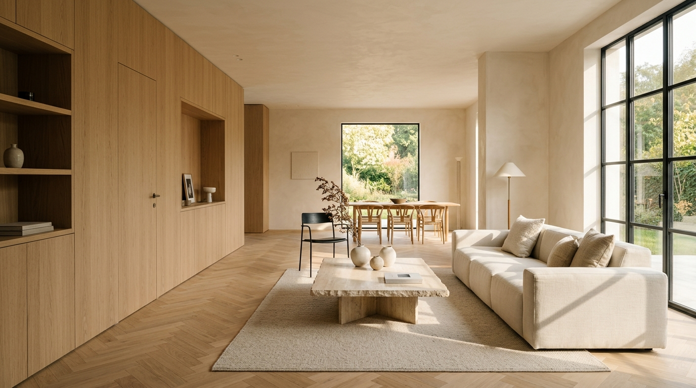
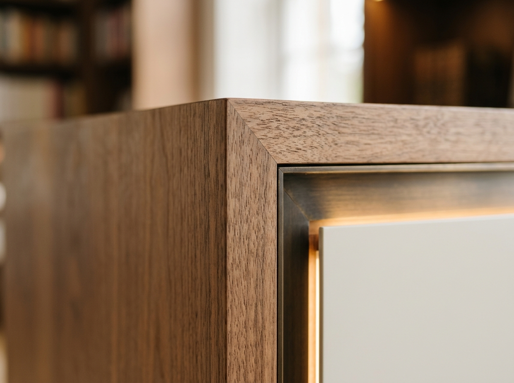
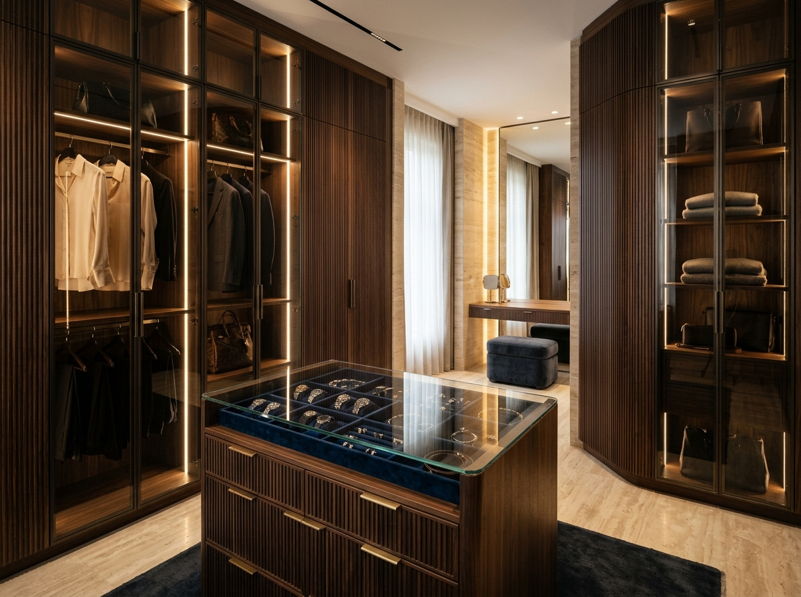
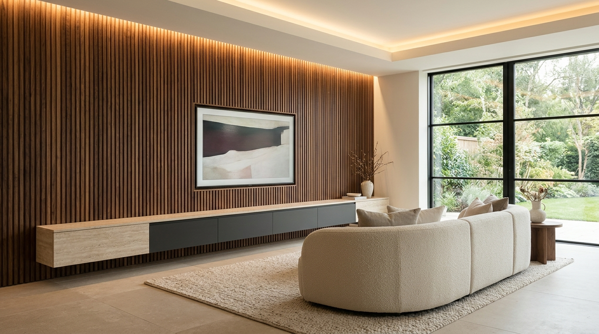
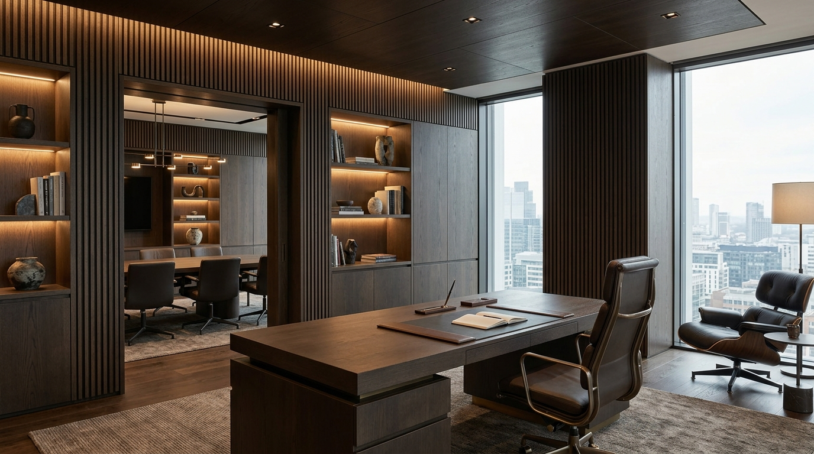
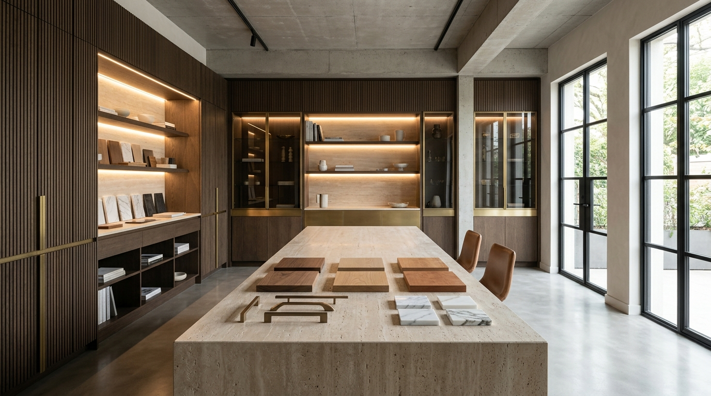

Cozinhas & Gourmet
Cozinha Gourmet Serra
Lâmina Natural de Carvalho • Laca Acetinada • Travertino

Design autoral, acabamento milimétrico e mais de duas décadas sendo referência em móveis planejados na Serra Catarinense.
Há mais de duas décadas em Lages, a CRIART Móveis Planejados constrói histórias dentro de residências e espaços corporativos na Serra Catarinense.
Nosso trabalho nasce do encontro entre o olhar artesanal sobre cada veio da madeira e a engenharia de precisão industrial. Cada junção em meia-esquadria, cada ferragem de amortecimento silencioso e cada linha de iluminação embutida são pensadas para resistir ao tempo com a mesma elegância do primeiro dia.
Não entregamos apenas mobiliário; materializamos a atmosfera de conforto, permanência e sofisticação que a sua arquitetura merece.


Projetos executados com curadoria de lâminas naturais, lacas acetinadas, vidros especiais e sistemas de iluminação integrados.

Lâmina Natural de Carvalho • Laca Acetinada • Travertino

Nogueira Escura • Vidro Bronze • Perfis Metálicos

Nogueira Ripada • Laca Matte • Iluminação Indireta

Carvalho Ebanizado • Couro Natural • Bronze Escovado
Um fluxo estruturado para garantir previsibilidade de prazo, fidelidade ao projeto arquitetônico e tranquilidade absoluta na entrega.
Entendimento profundo da sua rotina, necessidades de uso e levantamento milimétrico a laser diretamente no local da obra.
Definição criteriosa de lâminas, lacas, texturas, ferragens de amortecimento de alta performance e pontos de iluminação.
Produção sob medida com maquinário de ponta e revisão artesanal peça por peça sob rigoroso controle de acabamento.
Equipe própria, instalação limpa, pontual e acompanhada de perto até a regulagem final e entrega das chaves.
“Fizemos toda a marcenaria da nossa casa em Lages há oito anos e os móveis continuam intactos — portas alinhadas, corrediças suaves e acabamento impecável. O cumprimento do prazo na entrega foi exemplar.”
“O que diferencia a Criart é o cuidado técnico antes mesmo de começar a fabricar e o pós-venda sempre presente. A equipe de montagem deixou o apartamento limpo e respeitou cada detalhe do nosso projeto.”
“Como arquiteta, preciso de uma marcenaria que execute exatamente o que especifico em prancha. A Criart traduz o desenho com fidelidade milimétrica, ótima curadoria de lâminas e zero dor de cabeça na obra.”
Convidamos você para visitar nosso showroom, tomar um café e conhecer de perto nossa curadoria de lâminas naturais, lacas, ferragens e soluções de iluminação.

Rua Mateus Junqueira, 403 - Copacabana
Lages - SC, CEP 88504-131
Segunda a Sexta: 08h30 às 12h • 13h30 às 18h
Sábados: Atendimento com hora marcada
Preencha os dados abaixo para iniciarmos uma conversa consultiva sobre o seu ambiente.